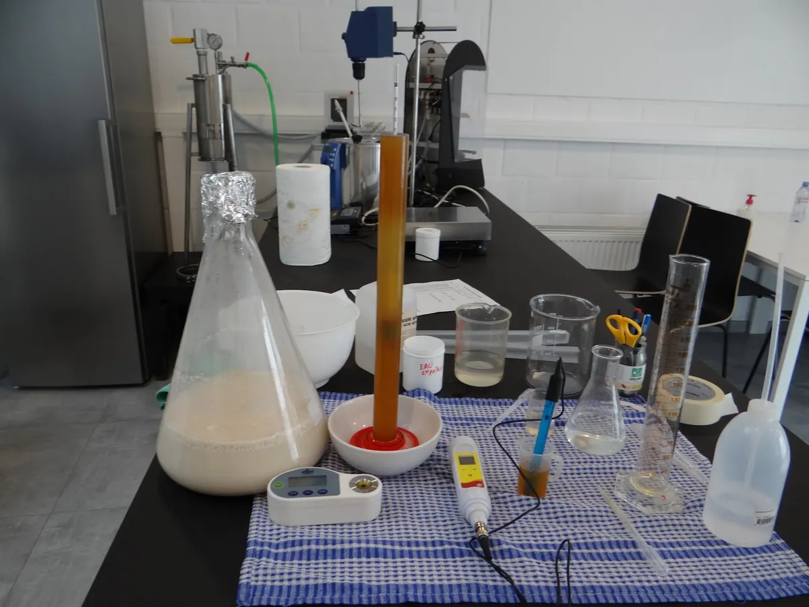

brasser vos recettes
Les Essais
L'atelier brassage en 50 litres mis à votre disposition, pour passer de l'idée à la bière :
- produire les recettes que vous avez imaginées
- essayer des levures, malts, houblons, fleurs ou épices particuliers
- mettre au point de nouvelles techniques
- vous essayer à une vraie production, pour un événement, voire pour la vente